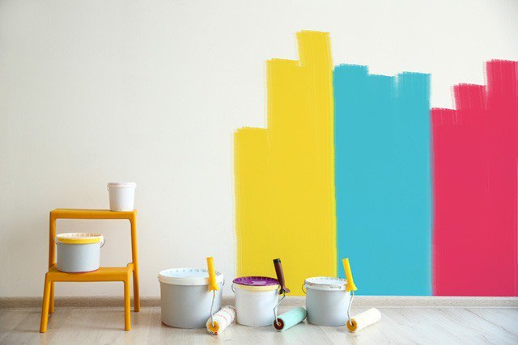
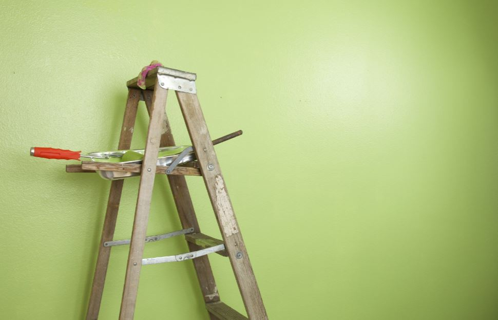
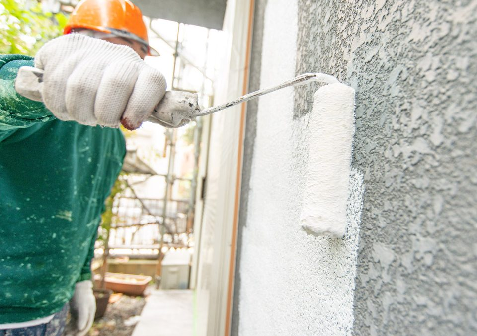

¿No sabes qué color elegir?
¿Te gustaría entrar a tu casa y que el ambiente sea cómodo y agradable de inicio a fin?, no te preocupes, Telepinturas2000 te aconseja con pequeños tips para hacerlo.

¿Tus paredes están aptas para ser pintadas?
Te explicaremos un poco el cómo preparar tus paredes para ser pintadas, también a identificar si están en óptimas condiciones para su cambio de color.

Pinturas y herramientas para pintar en Barquisimeto: lo que debes saber.
¿Estás buscando pinturas en Barquisimeto? ¿Deseas cambiar los colores de tus paredes? También necesitarás brochas y rodillos. Para pintar en Barquisimeto debes saber donde comprar los materiales que necesitas para hacerlo con calidad y al mejor costo.